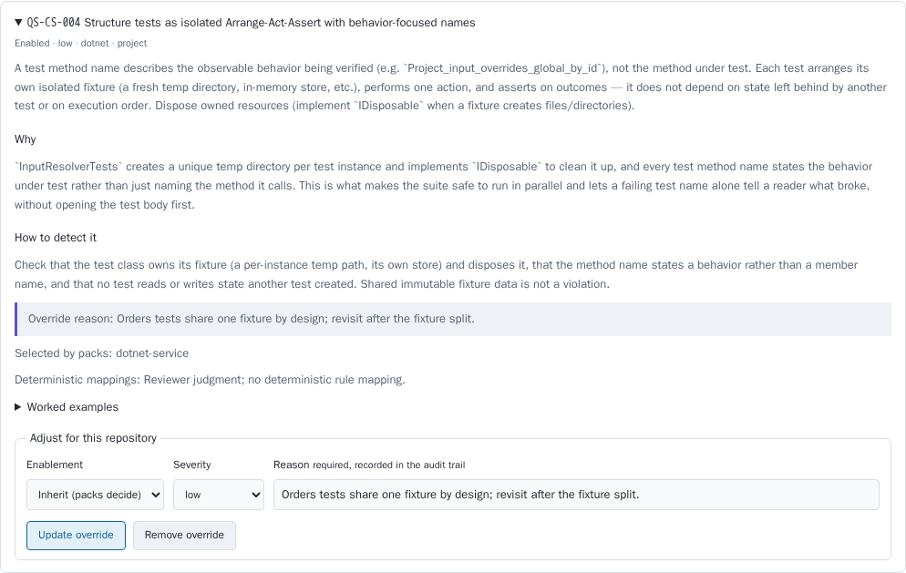
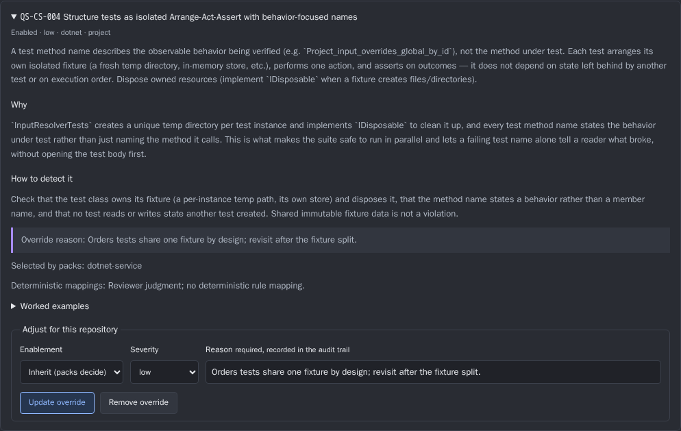
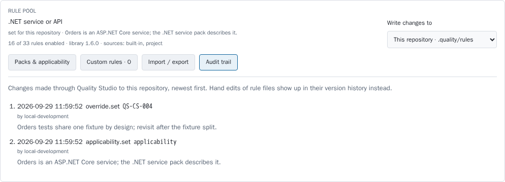
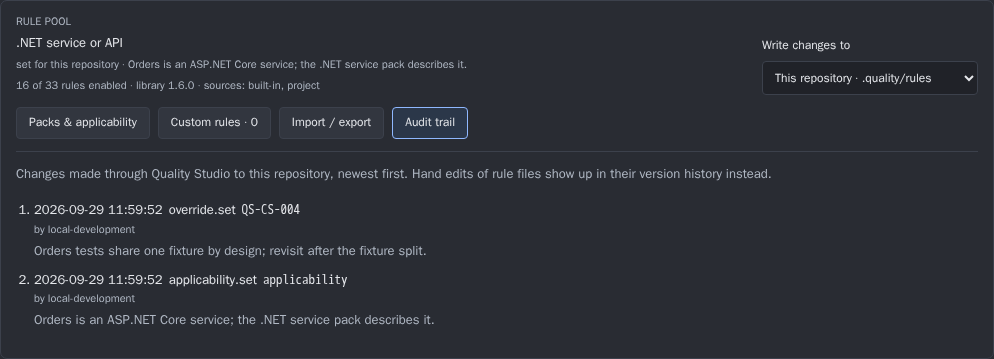

The management layer on top of the Quality Studio rule pool. QS-112 lets an operator adjust one repository at a time. This design adds one host-wide catalogue with rule lifecycle, provenance, named profiles, overrides that expire, retirement that accounts for open findings, and retirement signals from QS-114 metrics. It is cut into eight cards over two waves.
Pattern conceptStatus decision-pendingPhase decision-readyAs ofBuilds on QS-112, QS-113, QS-114
01 Starting point
The card treats QS-112, QS-113 and QS-114 as the delivered mechanics. As of 29 September 2026, the repository shows them at three different stages. The design depends on this, so it comes first.
Card
State on 29 September 2026
What the management layer uses
QS-112 rule pool v1
Reviewed delivery on runner/agent-runner-01/QS-112 at f0086f2e. Not in main. Integration recovery was recorded the same day.
The four-layer resolution, RulePoolStore, ResolvedRuleCatalogue, the /rules routes, and the schemas rule-pack.v1, rule-applicability.v1, rule-set.v1 and rule-audit.v1. Also the per-repository manager qs-rule-pool-manager.
QS-113 analyzer rules
Reviewed delivery at a55f3810 (salvage ref). Not in main. It changes 8 of the same files as QS-112. Both branches declare rule library 1.6.0.
deterministicRuleIds, DeterministicRuleMap, catalogueRules on analyzer findings, GET /api/repos/{id}/analyzers.
QS-114 effectiveness metrics
No commit, branch or task folder on this runner.
Nothing yet. Section 06 states the contract this layer needs from QS-114.
Main already has what the metrics need: finding lifecycle records keyed by fingerprint in findings/state.json (open, accepted, waived, false-positive, resolved, not-reobserved). Every finding also carries a validated ruleId. The review panel's Dismiss action writes either waived or false-positive.
02 Alternatives
The alternatives differ in where management happens and what counts as the source of truth. In all three, the files QS-112 writes stay the stored form, and every change keeps a required reason.
A. Deeper per-repository manager
Add lifecycle, override expiry and metrics to the existing Review policy → Rules & rationale panel. A "profile" would be a rule-set.v1 file exported from one repository and imported into others.
Smallest change. There is still no view across repositories, though. A rule's adoption, its overrides and its open findings can only be seen one repository at a time. Imported profiles are copies, so a change to the source does not reach the other repositories and they drift silently. Retiring a rule for the host would mean visiting each repository.
B. Host catalogue workspace over the same files
A host-level Rule catalogue view reads every repository the client can reach. It adds three first-class concepts: rule lifecycle, named profiles assigned to repositories, and overrides with expiry. Composing packs, importing packs, reviewing the audit trail and retiring rules all happen here. Every write still goes through the QS-112 validation and audit path. The per-repository manager stays for project-scope edits.
Moderate change: one aggregate read endpoint, one new resolution layer (profile), three additive schema fields, and new screens. Files stay the source of truth, so project changes remain reviewable in Git.
C. Catalogue as a Git repository
Keep global rules, packs and profiles in a dedicated catalogue repository. Quality Studio only reads it. Changes are made by pull request, and the UI would at most draft the pull request.
Strongest review trail. But it needs Git hosting integration, and it contradicts the QS-102 principle that the studio does not write into checkouts. It also would not let Robert manage rules in the UI within two waves. It duplicates the audit trail QS-112 already records.
03 Recommendation
Recommended: B, host catalogue workspace
Build one catalogue view across repositories on top of the QS-112 files and API. Add lifecycle status to the rule definition, named profiles as a host layer assigned per repository, and an optional expiry on overrides. Every action that turns a rule off shows what happens to its open findings before it is applied. Effectiveness metrics from QS-114 raise retirement candidates in a queue. They never retire a rule automatically.
Main reason: Robert wants to manage the catalogue, and managing means seeing adoption, overrides and outcomes across repositories. Option A cannot show that. Option C cannot deliver it in the UI within two waves.
Working decisions (each is detailed below and listed again under Open decisions):
Lifecycle is stored in the rule's own frontmatter (status: proposed | active | deprecated). The existing enabled: false keeps meaning retired.
Profiles are host objects in <data root>/rules/profiles/. They are assigned on the repository registration and resolve as a new layer between the global scope and the project.
Override expiry lapses the override back to the inherited state and shows a warning. It never fails reviews closed.
Turning a rule off offers to waive its open findings with a traceable retirement marker. Reactivating the rule offers to reopen exactly those findings.
Governance uses the two privilege levels the API already has, Git review for project scope, and automatic snapshots for the global scope.
04 Catalogue model
The operator sees six concepts. Only lifecycle, profile, expiry and the imported marker are new. Everything else is QS-112 and QS-113 under its operator name.
Concept
What the operator sees
Stored as
New or existing
Rule
Id, title, technology, kinds, category, effective and authored severity, version, statement, examples, change history, packs that select it, analyzer ids that enforce it.
A named, versioned selection for one project type. It selects rules and never changes severity.
rule-pack.v1 (RulePackDocument)
Existing (QS-112)
Profile
A named bundle of packs and overrides assigned to one or more repositories, for example dotnet-service-strict.
New rule-profile.v1 in <data root>/rules/profiles/<id>.json, assigned by ruleProfile on the registration
New
Override
Enablement or severity for one rule in one scope, with a required reason and now an optional expiry.
rule-config.v1 override plus optional expiresAt
Existing, expiry new
Lifecycle
Proposed, Active, Deprecated (with sunset date and optional replacement), Retired.
Frontmatter status, sunset, replacedBy; retired is enabled: false
New (retired exists)
Provenance
Two badges. Origin: Built-in, Custom or Imported. Enforcement: Agent, or Analyzer + agent when deterministicRuleIds is not empty.
Origin from ResolvedRule.Origin; imported from a new optional importedFrom; enforcement from QS-113
Derived; imported marker new
Resolution with profiles
QS-112 resolves four layers. The profile becomes a fifth, placed so that the repository's own files still win. Project files are author-owned and reviewed in Git. A host assignment should not silently override them.
Proposed resolution order. Applicability: project, then profile, then global, then the house-style default. Overrides: global, shared global inputs, profile, project. Custom rules and packs are only defined in the global and project scopes. A profile references them and never defines rules.
Lifecycle
Lifecycle belongs to the rule definition, so whoever owns the definition changes it. The library changes built-in rules by release. The owning scope changes custom rules through Quality Studio. Every transition bumps the rule's version and appends to its ## Change history, so the history travels with an exported rule set. Status is not prompt text, so a transition by itself causes no policy drift.
Proposed. Validated and visible, but no pack selector matches it, including an explicit ids selector. It reaches reviews only through a pilot: an override with enabled: true and an expiresAt, normally in one repository. Pilot findings are ordinary findings, so their dispositions feed the metrics the activation decision needs.
Active. Behaves exactly as today.
Deprecated. Still enforced. It needs a sunset date and may name a replacedBy rule that exists in the pool. The catalogue and each rule card show the sunset. The sunset is advisory: after it passes the rule stays enforced and appears in the rule health queue as sunset passed. Behaviour never changes because a date passed.
Retired.enabled: false, as today. The id is never reused. For a built-in rule an operator cannot edit the library, so retire on this host writes a global override with enabled: false and a reason. The catalogue shows this as Retired here.
Overrides with expiry
An override gains an optional expiresAt (UTC date-time, in the future when written). From that moment the override stops applying and the rule returns to what the lower layers say. Resolution adds a warning diagnostic, not an error, so reviews keep running. The UI defaults the expiry to 90 days for a disable or a severity downgrade. No expiry must be chosen explicitly. The catalogue counts permanent overrides separately. The pool cache key and the hierarchy snapshot key must include the set of active overrides. Otherwise a lapse is not seen until a file changes.
05 Management flows
The layouts below are proposals, and the figures in them are illustrative. They sit in a host-level Rule catalogue view, reached from the shell next to Review policy. The QS-112 manager stays in Review policy → Rules & rationale for editing one repository, and links to the catalogue.
Browse and search the catalogue
One row per rule id across the whole pool the client can reach. Search matches id, title, statement and analyzer ids, so CA2016 finds QS-CS-003 through its deterministicRuleIds. Adopted counts the repositories where the rule is enabled. The marker after it counts repositories that override it. A repository with an invalid pool is listed with its diagnostics, not hidden.
RULE CATALOGUE library 1.6.0 | 5 repositories | 1 pool invalid
Search [ CA2016 ] Technology [all v] Kind [all v] Status [not retired v] Health [any v]
Origin [x] Built-in [x] Custom [x] Imported Enforcement [ ] Analyzer + agent only
---------------------------------------------------------------------------------------------------------
Rule Title Origin Status Adopted Health, 90 days
---------------------------------------------------------------------------------------------------------
QS-CS-003 Async hygiene [A] Built-in Active 4/5 ov:1 31 hits, 6 % FP
QS-CS-004 Isolated Arrange-Act-Assert Built-in Active 5/5 ov:2 exp:1 12 hits, 42 % FP !
ACME-CS-001 Domain names for exports Imported Proposed pilot in 1 3 hits, n too small
QS-NG-005 OnPush change detection Built-in Deprecated 2/2 sunset 2026-12-31
---------------------------------------------------------------------------------------------------------
[A] analyzer ids (CA2016, CS4014) ov:n overridden in n repositories exp:n expires within 14 days
! retirement candidate
QS-CS-004 DETAIL
Statement | Why | How to detect | Examples | Change history (v1.1.0 ...)
Packs: dotnet-service, house-style Profiles: dotnet-service-strict
Repository State Source Severity Reason Expires
orders enabled project override low Orders tests share one fixture ... none (permanent)
billing enabled profile medium - -
legacy-import disabled global override - Vendored test harness 2026-10-10 exp
[ Adjust in orders ] [ Deprecate ... ] [ Retire on this host ... ] [ Audit for this rule ]
Compose a pack
A pack editor over rule-pack.v1 selectors, with a live preview resolved against the target scope's pool. Proposed rules are never selected. The editor shows which profiles and repositories use the pack, and what each would gain or lose. If the selection changes, the version must change. The editor suggests a minor bump when the selection widens and a major bump when it narrows.
PACK team-backend (global scope) version 1.2.0 -> [ 2.0.0 ] suggested: major
Title [ Team backend services ] Project types [ dotnet-api, dotnet-worker ]
Selectors (a rule is selected when any row matches; every field set in a row must match)
1 technologies [dotnet, generic] defaultOn [true] 19 rules
2 ids [ACME-CS-002] 1 rule
3 kinds [security] (removed) -2 rules
[ + selector ]
---------------------------------------------------------------------------------------------------------
PREVIEW | IMPACT
20 rules selected (was 22) | Used by profile dotnet-service-strict -> 3 repositories
- QS-GN-001 Untrusted content is data | billing -2 rules, 4 units will show policy drift
- QS-CS-006 External process arguments | payments -2 rules, 9 units will show policy drift
skipped: ACME-CS-009 (proposed) | orders not affected (project applicability wins)
---------------------------------------------------------------------------------------------------------
Reason [ Security review runs as its own profile now ] [ Validate ] [ Save pack ]
Apply a profile to a repository
A profile is packs plus overrides. Assigning it to a repository is a host change on the registration, so it needs the registrar privilege. The dialog runs the resolution as a dry run and lists the rule set difference. Project-scope settings that will keep winning are shown explicitly, so the operator is not surprised later.
REPOSITORIES AND RULE PROFILES
Repository Profile Applicability from Enabled rules Overrides (expiring) Pool
orders - project 16 1 valid
billing dotnet-service-strict v3 profile 21 3 (1) valid
website angular-public v1 profile 21 0 valid
legacy-import - global 11 2 1 problem
APPLY PROFILE TO orders
Profile [ dotnet-service-strict v3 v ]
Result for orders (dry run)
+ 5 rules enabled QS-CS-006, QS-CS-008, QS-CS-009, QS-GN-001, QS-GN-002
~ 1 severity changed QS-CS-003 medium -> high (profile override: "payments-grade async rules")
! kept by project .quality/rules/applicability.json still wins; the profile's packs do not apply
[ Show how to remove it from the checkout ]
14 units will show policy drift on their next review
Reason [ Orders moves to the strict service baseline ] [ Cancel ] [ Assign ]
Review an override audit trail
QS-112 records an audit line per scope and shows it per repository (Evidence, audit figure). The catalogue adds one timeline across the global scope, profiles and every reachable repository. It has filters and shows the stored before and after as a diff. Two kinds of derived rows fill the gaps the file cannot record: an override that lapsed by time, and a rule file that changed outside Quality Studio. The second is detected when the pool fingerprint changes without a matching audit line.
AUDIT, ALL SCOPES
Scope [all v] Repository [all v] Action [override.* v] Rule [ QS-CS-004 ] Actor [all v] From [2026-09-01]
---------------------------------------------------------------------------------------------------------
When Scope Action Target Actor Reason
---------------------------------------------------------------------------------------------------------
2026-10-10 00:00 global override lapsed QS-CS-004 (time) expiry set on 2026-07-12
2026-09-29 11:59 orders override.set QS-CS-004 local-development Orders tests share one ...
severity: medium (authored) -> low expires: none -> none
2026-09-27 08:14 billing changed outside overrides (file) see the file's Git history
2026-07-12 16:02 global override.set QS-CS-004 ops-robert Vendored test harness
---------------------------------------------------------------------------------------------------------
[ Export CSV ] Global history: 42 snapshots [ Restore global scope to 2026-09-20 ... ] (dry run first)
Retire a rule and its effect on open findings
Today, turning a rule off leaves its open findings open until the unit is reviewed again. That review no longer reports them. They then become resolved ("Finding was not present in the latest review") when the file changed, or not-reobserved when it did not (evidence). A retired rule therefore looks like a fixed defect in the reports. Every action that turns a rule off in a scope shows the affected findings first: retire, disable override, remove from pack and assign profile.
RETIRE QS-CS-004 ON THIS HOST
Effect on reviews The rule stops reaching prompts in 5 repositories; 37 units will show policy drift.
Replacement [ none v ]
Reason [ Replaced by the team's own fixture rule ACME-CS-004 ]
---------------------------------------------------------------------------------------------------------
FINDINGS UNDER QS-CS-004 IN 5 REPOSITORIES
open 23 [x] Waive as retired (author rule-retirement:QS-CS-004, reason above)
not-reobserved 4 [x] Waive as retired
accepted 6 [ ] Keep accepted (default: a person confirmed these as real defects)
waived, false-pos. 9 unchanged
Grade effect billing 81 -> 86 orders 90 -> 92 payments 77 -> 79 2 repositories unchanged
---------------------------------------------------------------------------------------------------------
Writes: global override enabled: false (audit override.set) and 27 finding states (audit rule-retirement)
[ Cancel ] [ Retire rule ]
The finding step reuses FindingStateStore.SetAsync with state waived. The author is rule-retirement:<rule id> and the reason is the retirement reason. Review merge already leaves a waived finding as a person set it, so a later review does not turn it into resolved. Waived findings stay visible and counted, and only their grade deficit is removed. Reactivating the rule offers to reopen exactly the findings with that author. No new lifecycle state is needed.
Import a pack from another repository
QS-112 imports a whole scope as a rule-set.v1 file. Robert's case is narrower: take one pack that another registered repository already uses. The flow exports that pack from the source with its dependency closure, then runs the existing merge import into the target with a dry run first. No file round trip is needed, and the client must be able to reach both repositories.
IMPORT PACK
From repository [ billing v ] Scope [ project v ] Pack [ team-fixtures v1.3.0 v ]
Into [ orders, this repository (.quality/rules) v ]
---------------------------------------------------------------------------------------------------------
CLOSURE (dry run of POST /rules/import, mode merge)
added pack team-fixtures importedFrom billing, sha256:4be1..., v1.3.0
added customRule ACME-CS-004 selected by ids; not present in orders
unchanged customRule ACME-CS-001 identical content already present
conflict customRule ACME-CS-002 differs from the copy in orders [ keep orders' copy v ]
not imported applicability and overrides (a pack import never changes them)
Result valid. orders reviews with +2 rules once team-fixtures is selected in its applicability or profile.
---------------------------------------------------------------------------------------------------------
Reason [ Adopt billing's fixture rules ] [ Cancel ] [ Import ]
A pack import adds the pack and nothing else. The operator still selects it in an applicability or a profile, which makes the second decision explicit and audited. Imported custom rules and packs carry importedFrom (source repository or rule set name, digest, time), which the Imported badge reads.
06 Governance
Who may change what
The API has two privilege levels today. A client that may reach a repository may mutate its project scope. A client that may register repositories also writes the global scope; QS-112 already enforces this with a 403. The design maps onto these levels and the library release process. It adds no new privilege for now.
Global override, custom rule, pack, lifecycle of a global rule
no
yes
—
Global audit and global snapshot
Profile create or edit, assign to a repository
no
yes
—
Global audit (full before and after)
Retire a built-in rule on this host
no
yes (global override)
—
Global audit and retirement finding states
Built-in rule text, status, packs
no
no
yes (rules/*.md, rules/CHANGELOG.md)
Library version and changelog
How a change is versioned and reviewed
Project scope is versioned by Git. A write through Quality Studio changes .quality/rules/ in the checkout, and the change is reviewed in the repository's pull request like any other code. The capture for this Dossier shows the result: after two UI writes, the sample checkout had an untracked .quality/ directory. Reviews read the working tree, so an uncommitted rule change affects results before anyone has reviewed it. The catalogue therefore marks repositories with uncommitted rule files, and each review run records the rule pool digest together with a rule files uncommitted flag.
Global scope and profiles live in the data root, outside Git. Every accepted global write already appends an audit line. In addition, it writes a rule-set.v1 snapshot to <data root>/rules/history/. Restore is an import in replace mode, always shown as a dry run first. Profile changes keep their full before and after in the audit line, because profiles are small.
Validation first. QS-112 already rejects any write that would add a configuration problem. The management layer adds an impact dry run before every write that changes an effective rule set (packs, profiles, retirement). Save stays disabled until that preview has been loaded.
Packs and profiles carry versions. A changed selection or override set requires a new version. The audit line records both versions.
Actor. In Local mode every write is recorded as local-development, as the capture shows. That is acceptable on a single-operator loopback host. The audit view states that the actor is unauthenticated, and Hosted mode records the client id.
Effectiveness metrics and retirement
QS-114 has not been delivered, so this is the contract the management layer needs, stated in terms of data main already holds. Counts are per rule id, per repository, over a window. They are derived from findings/state.json and the persisted analyzer results.
Measure
Definition
Hits
Distinct fingerprints with this ruleId first observed in the window, from agent reviews. Analyzer hits are counted separately: deterministic findings linked to the rule through catalogueRules.
Accepted
Findings whose current state is accepted.
Dismissed
waived + false-positive, the two outcomes of the UI's Dismiss. Retirement waivers (author rule-retirement:*) are excluded.
False positives
false-positive alone.
False-positive rate
false positives ÷ (accepted + waived + false positives), reported with its denominator n.
Resolved
resolved excluding retirement effects. It shows the rule led to a fix.
Three signals put a rule into the Rule health queue. The thresholds are proposed defaults, not measured values, and are configurable per host:
Noisy: false-positive rate ≥ 40 % with n ≥ 20 over 90 days across repositories. Suggested action: rewrite the detection text, or deprecate.
Contested: disabled or downgraded by an override in at least half of the repositories whose packs select it, with at least 4 such repositories. Suggested action: move it out of the pack, or rewrite it.
Silent: no agent or analyzer hit for 180 days while active in at least 3 repositories. Suggested action: confirm relevance. Silence can also mean the rule works.
A signal only opens a queue item. The steward decides: keep (the item is snoozed for one window), rewrite (opens the custom rule editor, or a note for the library), deprecate (sets status and sunset), or retire (runs the retirement flow above). The chosen action and its reason go to the audit. No metric changes a rule by itself.
07 Implementation cut
Eight cards in two waves, after a wave 0 that is integration work, not new design. At the end of wave 1 Robert can browse and search the catalogue across repositories, compose and import packs, set expiring overrides and manage lifecycle in the UI. Wave 2 adds profiles, the host-wide audit trail, retirement with its finding effect, and rule health.
Proposed order. Card 8 also needs QS-114's measures. If QS-114 has not landed by the start of wave 2, card 8 moves to wave 3 and nothing else moves.
#
Card
Wave
Depends on
Acceptance in short
0
Integrate QS-112 and QS-113 into main
0
—
Both on main. The shared library version is resolved (one becomes 1.7.0). The combined catalogue and schema checks pass.
1
Catalogue browser across repositories
1
0
GET /api/rule-catalogue, search including analyzer ids, adoption per repository, provenance badges, invalid pools listed.
2
Rule lifecycle and pilots
1
1
Frontmatter status, sunset and replacedBy; packs never select proposed rules; pilots via override; no prompt drift from a status change.
3
Overrides with expiry
1
1
expiresAt lapses to the inherited state with a warning; the cache key includes active overrides; 90-day default for disable or downgrade.
4
Pack composer and pack import
1
1
Selector editor with live preview and impact; version bump enforced; import one pack with its closure from another repository; importedFrom.
5
Named profiles
2
1, 3
rule-profile.v1, assignment on the registration, new resolution layer, dry-run impact before assignment.
6
Host audit timeline and global history
2
1
Cross-scope timeline with before and after diff, rows for lapses and outside edits, global snapshots with restore, uncommitted flag.
7
Turning a rule off with its finding effect
2
2
Preview of findings by state, retirement waiver with marker, reopen on reactivation, applied to every rule-off action.
8
Rule health
2
7, QS-114
Metrics columns and rule detail, three signals, queue with keep, rewrite, deprecate and retire actions, all audited.
Card 0 is not a new card. It is the existing QS-112 and QS-113 integration and is listed only because every other card assumes it. The implementationTasks in workbench.json hold cards 1 to 8 with complete prompts.
08 Evidence
Classes: Observed was read or measured on 29 September 2026. Inferred follows from observations. Proposed is this design's choice.
Evidence. The QS-112 rule pool manager chooses packs for one scope at a time: this repository or all repositories. It shows no rule lifecycle, no profile and no view of other repositories. The applicability reason is required and shown in the header.Light: captured from a real build of QS-112 f0086f2e (API and ng serve through scripts/dev-stack.mjs) against a sample repository created for this capture. The pack choice was made through the UI.Dark: captured , same build and state, ?theme=dark.
Light

Three fields, no expiry
Dark

Evidence. An override in QS-112 has exactly three inputs: Enablement, Severity and a required Reason. There is no expiry, so every override is permanent until someone removes it.Light: captured from the same QS-112 f0086f2e build. The severity override was saved through this form during the capture.Dark: captured , same build and state, ?theme=dark.
Light

Reason shown, before and after not shown
Dark

Evidence. The QS-112 audit trail lists one scope's entries with time, action, target, actor and reason. It does not show the stored after state, and it cannot filter or span repositories. In Local mode the actor is local-development for every change.Light: captured from the same QS-112 f0086f2e build after the two capture writes. The stored lines are in the task results as capture/qs-112-audit--real.jsonl.Dark: captured , same build and state, ?theme=dark.
Capture method: the pinned presentation-capture tooling named in the task (docs/operations/setup/presentation-capture.md, frontend/e2e/…, scripts/stable-frontend-boot-probe.mjs) does not exist in this repository. The captures follow QS-112's own frontend/tests/rule-pool-evidence.mjs pattern. The browser waits for network idle and fonts, and page errors and console errors are recorded (0 of each). The script, capture record and audit lines are in the task results under capture/. The build ran in a temporary worktree that was removed afterwards. The house template docs/app/templates/article-document-v2.html and the named fallback are also absent here, so this document copies the style block of the canonical AGT-2536 template.
09 Open decisions
Each decision has a recommended working option. An implementation card uses it unless the operator records another.
Decision
Options
Recommended
1. Shape of the management layer
A per-repository manager · B host catalogue · C Git catalogue repository
B. It is the only option with a view across repositories that fits in two waves.
2. Where lifecycle is stored
Frontmatter of the rule · host-side lifecycle registry
Frontmatter (status, sunset, replacedBy). It travels with export and Git, and uses the existing change history. Built-in rules can be retired on a host through a global override.
3. Where a profile is assigned
Repository registration (host) · profile in project applicability.json · profile as an imported copy
Registration. The host owns the assignment. Project files keep winning, and a checkout never names a host-specific id.
4. What an expired override does
Lapse with a warning · fail reviews closed
Lapse. It falls back to the intended default and matches the expiry of finding states.
5. When a deprecated rule's sunset passes
Advisory, listed in the queue · automatic retirement
Advisory. Behaviour never changes because a date passed. Retirement is a decision.
6. Effect of turning a rule off on its findings
Waive with a retirement marker · new lifecycle state rule-retired · leave as today
Waive with marker (rule-retirement:<id>). It needs no schema change, can be reversed, and review merge already preserves it.
7. How proposed rules are tried
Pilot through an expiring override · shadow mode that keeps findings out of the grade
Pilot override. It reuses the existing mechanics. Shadow mode would add a second finding class to grades and reports.
8. Who governs global changes
Reuse the registrar privilege · new rule-steward privilege · two-person approval
Reuse registrar. Robert's host has one operator. Revisit once there is more than one registrar.
9. How the global scope is versioned
Automatic rule-set.v1 snapshots in the data root · require the data root's rules folder to be a Git repository
Snapshots. Restore reuses import in replace mode, and no Git is needed on the host.
10. Retirement signal thresholds
Proposed defaults · wait for QS-114 data first
Ship the proposed defaults as configurable values. Re-tune them after the first 90-day window of QS-114 data.
10 Implementation
Delivery slices append their current implementation status here. Decision content above remains unchanged. Define one workbench.jsonimplementationTasks entry per independently reviewable slice, each with a bounded acceptanceScope. Never combine all recommendations into one open-ended implementation card.